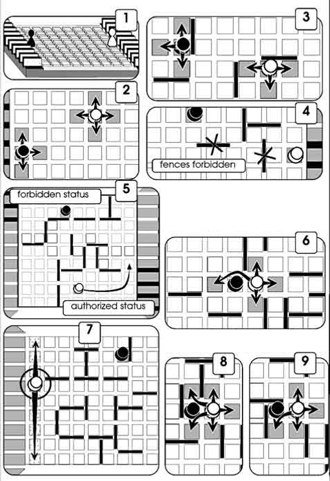

Contents:
- one board with 81 squares;
- two storage slots for the fences;
- 20 fences and 2 pawns.
PURPOSE OF THE GAME
To be the first to reach the line opposite to one's base line (fig.7).
RULES FOR 2 PLAYERS
When the game starts the fences are placed in their storage area (10 for each player).
Each player places his pawn in the centre of his base line (fig.1).
A draw will determine who starts first.
How To Play The Game Quoridor:
Each player in turn, chooses to move his pawn or to put up one of his fences.
When he has run out of fences, the player must move his pawn.
Pawn moves
The pawns are moved one square at a time, horizontally or vertically, forwards or backwards (fig.2).
The pawns must get around the fences (fig.3).
Positioning of the fences
The fences must be placed between 2 sets of 2 squares (fig.4).
The fences can be used to facilitate the player’s progress or to impede that of the opponent, however, an acess to the goal line must always be left open (fig.5).
Face to face
When two pawns face each other on neighbouring squares which are not separated by a fence, the player whose turn it is can jump the opponent’s pawn (and place himself behind him), thus advancing an extra square (fig.6). If there is a fence behind the said pawn, the player can place his pawn to the left or the right of the other pawn (fig.8 and 9).
END OF GAME
The first player who reaches one of the 9 squares opposite his base line is the winner (fig. 7).
TIME OF GAME
From 10 to 20 minutes.
In a tournament, it possible to allocate a set time to each player.
